地政学
スクレは憲法上の首都で、司法府と独立の記憶を担います。行政と議会がラパスへ移った歴史は、地域間の不均衡、鉱山経済、先住民政治、東西南北の統合問題を映します。古都であり、国家の正統性を問う場でもあります。
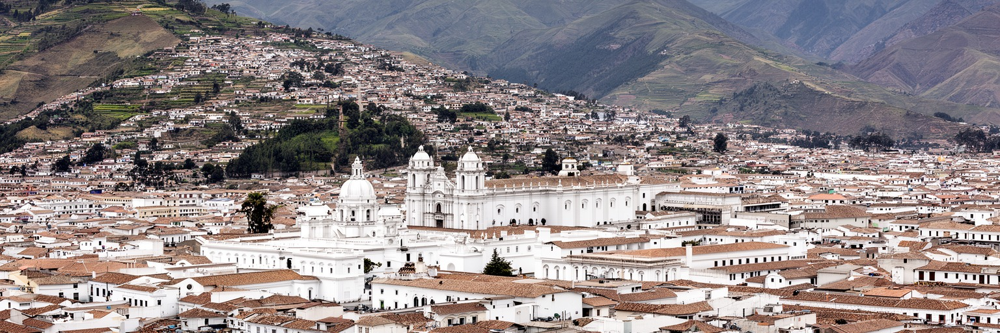
🇧🇴 ボリビア / チュキサカ県 / World City Atlas
ボリビアの憲法上の首都であり、司法、大学、世界遺産の白い旧市街、先住民社会、独立の記憶がアンデスの谷に重なる都市です。
都市の骨格
スクレはラパスに政府機能を譲りながら、最高裁判所を抱える憲法上の首都であり続けます。白壁の歴史地区、大学、教会、市場、周辺の農村が近く、国家の記憶と地方都市の日常が同じ坂道に重なります。
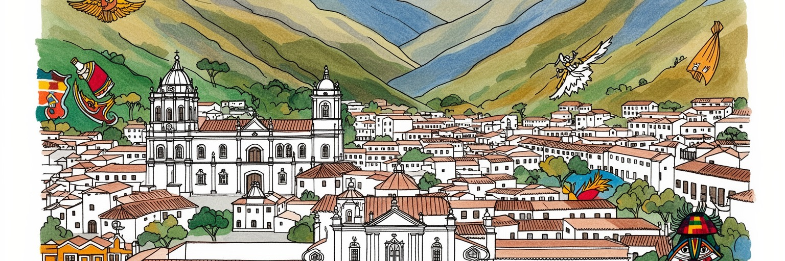
スクレは憲法上の首都で、司法府と独立の記憶を担います。行政と議会がラパスへ移った歴史は、地域間の不均衡、鉱山経済、先住民政治、東西南北の統合問題を映します。古都であり、国家の正統性を問う場でもあります。
雇用は司法、県都行政、大学、学校、医療、観光、建設、小売、周辺農村との交易に支えられます。若者は公的部門、専門職、移住、サービス業の間で進路を探し、歴史地区の観光収入も家計を左右します。堅実な経済です。
白い教会、修道院、大学、独立記念の広場、ケチュア文化、カトリックの祭礼が都市を形作ります。植民地都市の美しさは先住民労働と支配の記憶も抱え、祝祭と歴史教育が重なります。誇りと問いが深く同居します。
旅行者は世界遺産旧市街、自由の家、レコレータ、博物館、市場、恐竜足跡地へ向かいます。住民には坂道、バス、家賃、水、雇用、学生生活、周辺農村との結びつきが日常で、古都の穏やかさと社会課題が並びます。
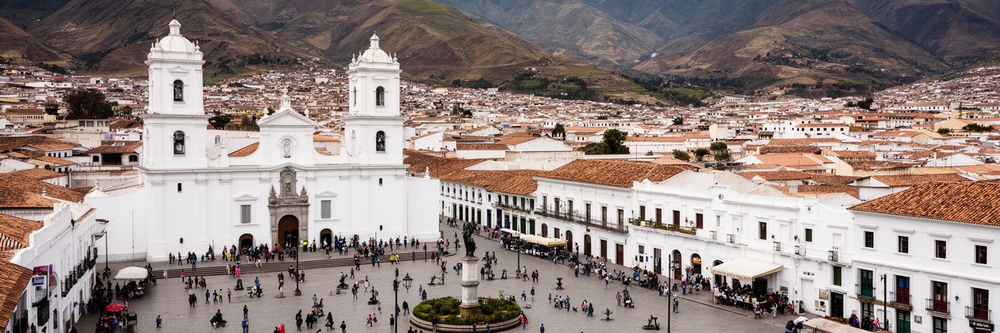
スクレはボリビアの憲法上の首都であり、国家の成立を語る時に避けて通れない都市です。政府と議会の実務はラパスへ移りましたが、最高裁判所をはじめ司法の象徴的な機能はスクレに残り、首都をめぐる歴史的な緊張も都市の記憶に刻まれています。この二重性は単なる行政分担ではありません。銀山とアンデス高地、東部低地、先住民多数社会、地方自治、資源配分をめぐる長い政治史が、首都機能の配置に表れています。白い旧市街の穏やかな広場を歩くと、国家の中心らしい壮大な官庁街というより、司法、大学、教会、市民生活が近接する古都の公共性が見えてきます。スクレの政治的な意味は、人口規模や経済力だけで測れません。ここでは、独立の記憶、法の権威、地方の誇り、ラパスとの関係、ケチュア系住民を含む地域社会の声が重なります。首都でありながら中央政府の日々の指揮所ではないため、都市は「国家とはどこにあるのか」という問いを静かに投げかけます。司法の存在は、法的な正統性を都市に与える一方、若者の雇用、政治抗議、公共投資の要求にも結びつきます。スクレを読むことは、ボリビアの国家形成を地図上の一点ではなく、複数の中心がせめぎ合う過程として理解することです。その緊張は、広場の式典や日々の会話にも残っています。静かな古都ほど、政治の記憶が長く残ります。
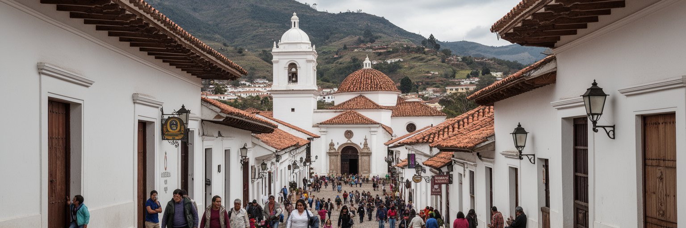
スクレの歴史地区は、白い壁、赤い瓦、低い回廊、教会、修道院、広場が連なる保存状態の良い旧市街として知られます。ユネスコ世界遺産に登録された都市景観は、スペイン植民地期の都市計画、宗教建築、共和国期の公共建築が重なり、観光客には穏やかな古都の印象を与えます。しかし、この美しさは権力の記憶から切り離せません。ラプラタ、チャルカス、チュキサカと名を変えてきた都市は、銀山地帯、先住民共同体、植民地行政、宣教、大学教育の結節点でした。白壁を守る保存政策は、建物の色やファサードだけでなく、誰が旧市街に住み続けられるか、家賃がどう変わるか、観光の利益が誰へ届くかという問題も伴います。修復された教会や博物館のそばには、学生の下宿、商店、バス停、市場、屋台があり、遺産は展示物ではなく生活空間でもあります。スクレの旧市街を読むには、写真映えする白さの奥に、支配、信仰、教育、先住民労働、独立運動、現代の都市管理を重ねる必要があります。建物を保存しながら住民の暮らしを追い出さないこと、観光客に歴史を丁寧に伝えること、修繕技術を地元の仕事にすることが、世界遺産都市としての信頼を支えます。美しさは、過去を正直に扱う時に深まります。日常の修理や清掃も、遺産を生かす大切な仕事です。住民の生活音も旧市街の大切な一部です。
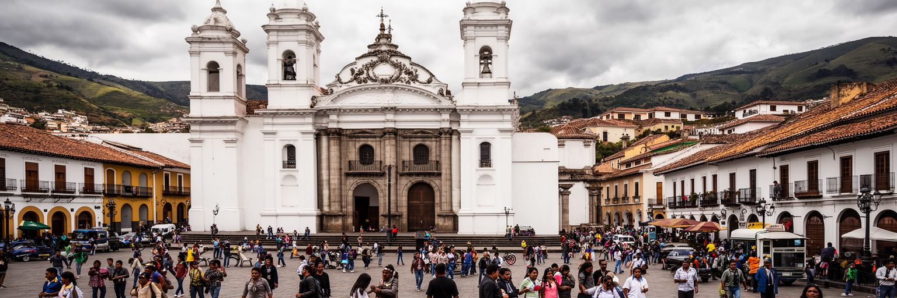
スクレはボリビア独立の記憶を強く背負う都市です。自由の家として知られる建物や五月二十五日広場は、独立宣言、共和国建設、英雄の物語を語る舞台であり、学校教育や記念式典を通じて国民的な記憶を形作ってきました。同時に、独立の物語は単純な勝利の歴史だけではありません。植民地社会の身分秩序、鉱山と農村の労働、先住民共同体の抵抗、クリオーリョの政治、周辺地域の参加と排除が重なっています。スクレの博物館や広場を歩くと、国家の始まりが都市の石造りの部屋に閉じ込められているようにも見えますが、実際には谷や高原、鉱山地帯、農村市場とつながっていました。今日の住民にとって、独立の記憶は観光資源であるだけでなく、地域の誇り、公教育、政治的要求の根拠にもなります。首都機能の移転をめぐる感情が今も残るのは、スクレが「ここで国が生まれた」という意識を持ち続けているからです。記念行事が華やかになるほど、誰の自由が語られ、誰の苦労が見えにくくなるのかも問われます。先住民の言葉、女性の役割、農村の参加を含めて独立を語り直すことは、古都の歴史を現代社会に開く作業です。スクレの公共空間には、国旗と白壁の背後に、国家を何度も定義し直してきた人々の記憶があります。その記憶は、若い世代の学びにも受け継がれます。記念館の静けさは、議論の入口にもなります。
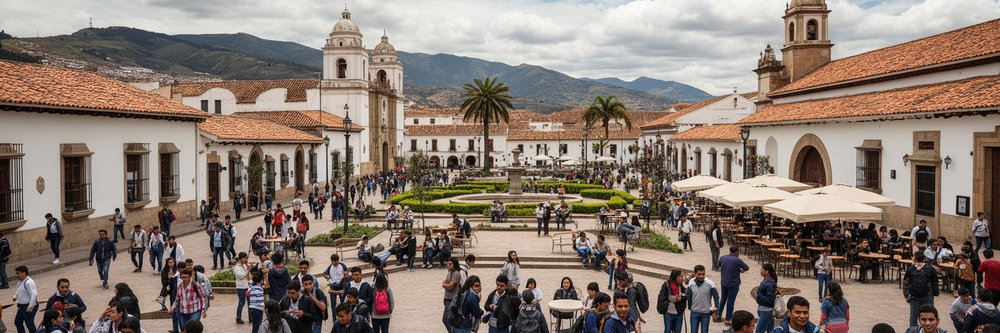
スクレは大学都市としての顔も濃いです。サンフランシスコ・ハビエル大学を中心に、法学、医学、人文、教育、技術、社会科学を学ぶ学生が集まり、歴史地区のカフェ、下宿、コピー店、図書館、広場、バス路線に若いリズムを加えています。大学は植民地期から知識人と行政人材を育て、独立思想の形成にも関わりました。現在も司法都市としての性格と結びつき、法曹、教員、医療職、公務員を目指す学生にとって重要な拠点です。大学があることで、スクレは観光だけの古都にとどまらず、議論、抗議、研究、文化活動、地方からの移動を受け止める都市になります。一方、若者に十分な雇用を用意できるかは大きな課題です。卒業後にラパス、サンタクルス、コチャバンバ、国外へ移る人も多く、専門性を地域に残す仕組みが問われます。学生の家賃、交通、食費、インターネット、奨学金、治安は都市政策そのものです。大学の存在は、旧市街保存にも影響します。古い建物が教室や事務所として使われ、若者が歴史空間を日常的に歩くことで、遺産は生きた公共財になります。スクレの将来は、知の蓄積を観光案内や司法事務に限らず、地域医療、農村支援、環境管理、文化産業、デジタル仕事へ広げられるかにかかっています。教室の議論が地域の課題へ届くことも重要です。学生の声は都市の更新力でもあります。
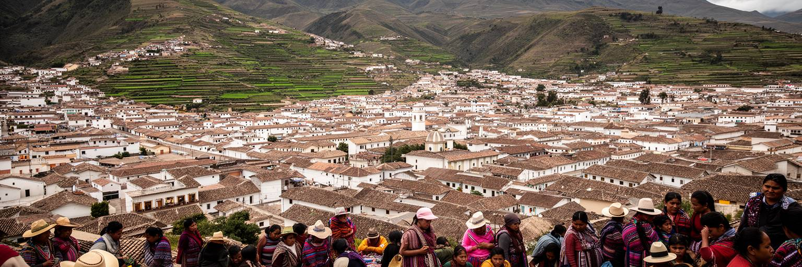
スクレは白い旧市街だけでできているわけではありません。周辺の谷や農村、ケチュア系住民の共同体、市場、バス路線が都市の生活を支えています。野菜、果物、ジャガイモ、トウモロコシ、織物、日用品、家族の送迎は、市場を通じて都市と農村を結びます。観光客が中心部の教会や博物館だけを歩くと、スクレの社会的な厚みを見落としがちです。チュキサカ県では先住民の言語、土地、自治、教育、医療、移住、貧困の問題が都市と分かちがたく、スクレの大学や病院、役所、市場は周辺地域の人々にとって重要な窓口です。農村から来る人は、販売、通院、行政手続き、学校、親族訪問のために都市へ入り、都市の人々も食料と労働を農村に依存します。この関係には不均衡もあります。中心部のスペイン語文化や植民地遺産が目立つ一方、ケチュア語の生活、農村の貧困、女性の商い、若者の移住は背景に追いやられやすいです。スクレを公平に読むには、旧市街の白壁と市場の色、裁判所と農村バス、大学の講義室と谷の畑を同じ都市圏として見る必要があります。市場で交わされる言葉、荷を運ぶ女性、朝早いバスの到着は、都市が周辺地域なしには成り立たないことを教えます。古都の品格は、この結びつきを尊重できるかにも表れます。農村の声を公共計画へ入れることも欠かせません。谷の道は生活の動脈です。
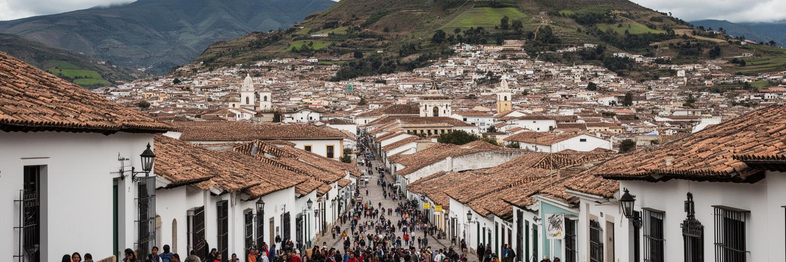
スクレの観光は、世界遺産旧市街、自由の家、教会、修道院、博物館、レコレータの丘、近郊の恐竜足跡地を中心に成り立っています。旅行者は白い街並み、穏やかな気候、歩きやすい中心部、比較的落ち着いた滞在環境に惹かれます。観光はホテル、ゲストハウス、レストラン、語学学校、ガイド、交通、土産物、修復職人、文化イベントに仕事を生みますが、同時に家賃上昇、旧市街の商業化、短期滞在者向けの価格、住民向けサービスの後退を招くこともあります。遺産都市では、見せるための街と暮らすための街のバランスが重要です。白壁を保つ規制が強すぎれば住民の修繕負担が増え、規制が弱すぎれば景観は失われます。観光収入を広げるには、中心部だけでなく周辺農村、市場、手工芸、食文化、大学、歴史教育と結びつける必要があります。スクレを訪れる旅は、きれいな建物を撮影するだけでは浅くなります。独立の記憶、先住民社会、司法都市の役割、学生の生活、農村との交易を理解すると、古都ははるかに複雑に見えます。観光業は外貨をもたらしますが、地元の若者が安定した技能と収入を得られる形でなければ、都市の未来を支える力にはなりにくいです。文化遺産を仕事に変えるには、住民が歴史を自分の言葉で語れる場と、利益が地域へ戻る仕組みが必要です。小さな宿や食堂も、その循環を支えます。
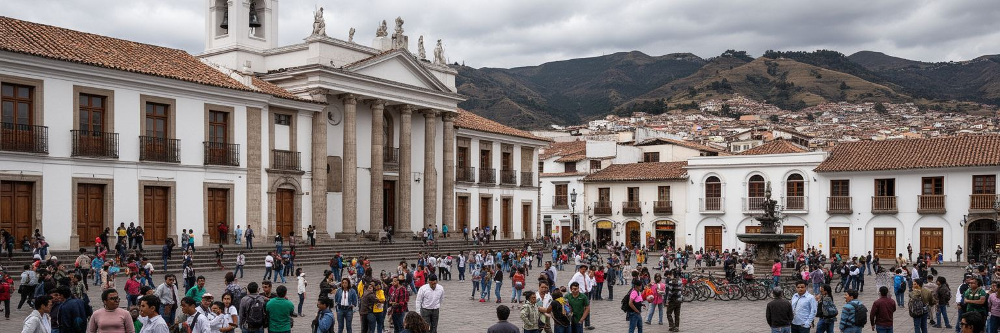
スクレで司法は抽象的な制度ではなく、都市の雇用、教育、交通、住宅、広場の使われ方に関わる日常的な存在です。裁判所、弁護士事務所、公証、行政手続き、法学教育、抗議行動、報道機関が中心部に集まり、法に関わる人の往来が街を動かします。最高裁判所の所在はスクレに首都としての重みを与えますが、市民が求めるのは象徴だけではありません。裁判の遅れ、手続きの複雑さ、汚職への不信、地方から来る人の交通費、先住民言語でのアクセス、女性や貧困層の権利保護は、司法都市の実力を測る現実的な指標です。スクレの広場や街路では、国家制度に対する期待と不満が可視化されます。大学で法律を学ぶ学生にとって、裁判所が近いことは学びの機会ですが、同時に制度改革の課題も目の前にあります。法の都市という看板は、歴史的な名誉であると同時に、公共サービスとしての司法を住民に届ける責任でもあります。周辺農村から来た人が迷わず手続きできるか、ケチュア語話者が理解できる説明を受けられるか、女性が安全に相談できるかは、都市の公平性に直結します。スクレの市民生活は、白い建物の権威だけでなく、窓口の対応、待ち時間、書類、通訳、弁護士費用という細部で法を経験します。その細部が信頼を作ります。公平な案内は、司法都市の基本です。信頼は毎日の対応から積み上がります。
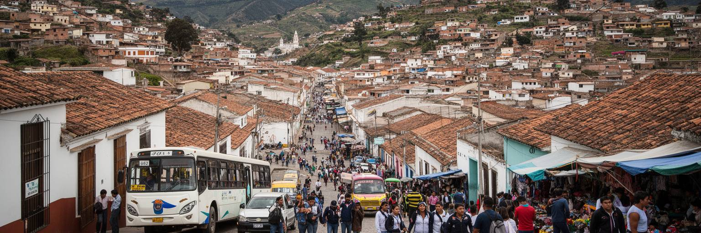
スクレの日常は、観光写真に写る中心部から丘陵の住宅地、周辺集落、谷の道路へ広がっています。白い旧市街は歩きやすく見えますが、都市全体では坂道、バス、ミニバス、徒歩、タクシーを組み合わせて通勤、通学、買い物、通院、行政手続きをこなします。学生の下宿、家族住宅、低所得地区、郊外の新しい宅地は、歴史地区とは異なる課題を抱えます。家賃、上下水道、道路舗装、排水、ゴミ収集、学校への距離、夜間の安全、インターネット、公共交通の本数が、暮らしの質を左右します。観光客には穏やかな古都として見えても、住民にとっては仕事の少なさ、物価、若者の流出、住宅費、 informal な商売の安定性が切実です。市場の朝は農村からの荷で始まり、昼には学生と職員が食堂に集まり、夕方には坂道を上る帰宅の流れが続きます。都市の公平性は、中心部の美しさだけでなく、丘の上の地区でも安全に水を得て、子どもが学校へ通い、高齢者が診療へ行けるかで測られます。スクレの行政は世界遺産保存と同時に、生活基盤の整備を進めなければなりません。古い街路を守ることと、新しい住宅地を置き去りにしないことは対立ではなく、同じ都市を長く住める場所にするための両輪です。坂道の生活を読むと、古都の現在が見えてきます。雨季の排水と道路維持も、毎日の安心に直結します。
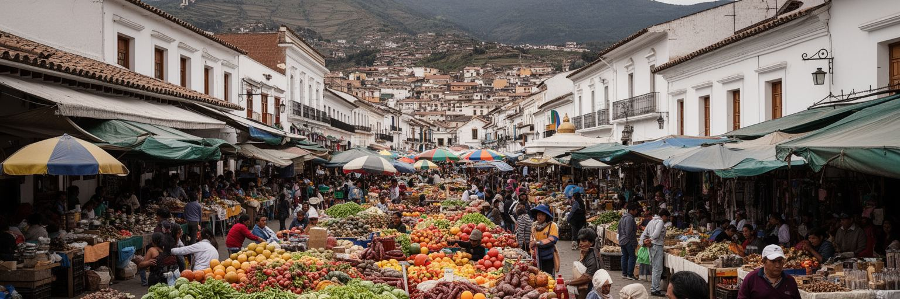
スクレの食文化は、中央市場や近隣市場、家庭の台所、周辺農村の畑と深く結びついています。チョリソ・チュキサケーニョ、スープ、トウモロコシ、ジャガイモ、唐辛子、果物、パン、チチャ、屋台の軽食は、都市の記憶と日常の栄養を支えます。市場は観光客が色彩を楽しむ場所である前に、農村の女性が商品を売り、家族が食費を計算し、学生が安い昼食を探し、商人が信用で仕入れる生活インフラです。食を読むと、都市と農村の関係、所得の差、輸送費、季節、気候、公共衛生が見えてきます。価格が上がれば家計はすぐに圧迫され、道路事情や燃料費は野菜や肉の値段に反映されます。市場の衛生、排水、ゴミ、冷蔵、歩行者の安全は、観光の印象だけでなく住民の健康に関わります。食文化を観光資源として生かすには、名物料理を売るだけでなく、生産者、料理人、市場労働者が適正に利益を得られる仕組みが必要です。スクレの市場には、ケチュア語とスペイン語、農村と大学、観光と家計、祝祭と日常が重なります。皿の上の料理は、谷の気候、土地、移動、労働、家族の時間を運んできます。古都を理解する入口は、教会や博物館だけではありません。朝の市場で何が届き、誰が売り、誰が買うのかを見ることでも、都市の社会構造は読み解けます。食卓は、都市の不平等と助け合いも映します。味は記憶の器です。
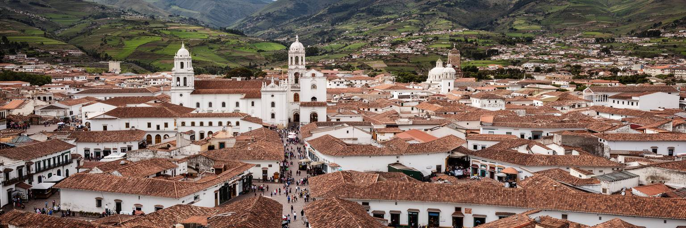
スクレは、世界都市を人口や金融だけで測る考え方を揺さぶる都市です。巨大な経済規模はありませんが、憲法上の首都、司法の拠点、独立の記憶、世界遺産旧市街、大学、先住民社会、周辺農村、市場、観光が短い距離に集まり、ボリビアという多中心国家の成り立ちを濃く示しています。ラパスが政府の実務を担い、サンタクルスが経済力を増す中で、スクレは法的な正統性と歴史的な記憶を守る中心として存在します。その位置は時に周縁化の感情を生み、時に国家を複数の中心から考える手がかりになります。白い旧市街の美しさだけを見れば、スクレは穏やかな観光地に見えます。しかし、裁判の信頼、大学生の進路、ケチュア系農村との関係、家賃、公共交通、世界遺産保存、若者の移住を合わせて読むと、都市ははるかに複雑です。古都であることは、過去に閉じることではありません。歴史を仕事に変え、司法を公平な公共サービスにし、学生が地域で力を発揮でき、農村との結びつきを尊重できるかが、スクレの未来を決めます。スクレを歩くことは、国家の首都とは何か、遺産は誰のために残すのか、地方都市はどのように世界とつながるのかを考えることです。白い街並みの奥に、ボリビアの政治、文化、生活の問いが重なっています。その重なりこそが、スクレを読む価値です。小さな中心にも世界性があります。